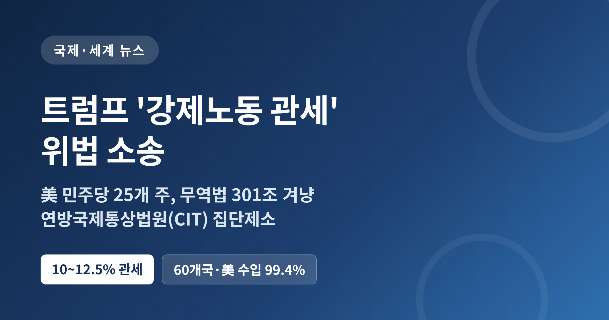
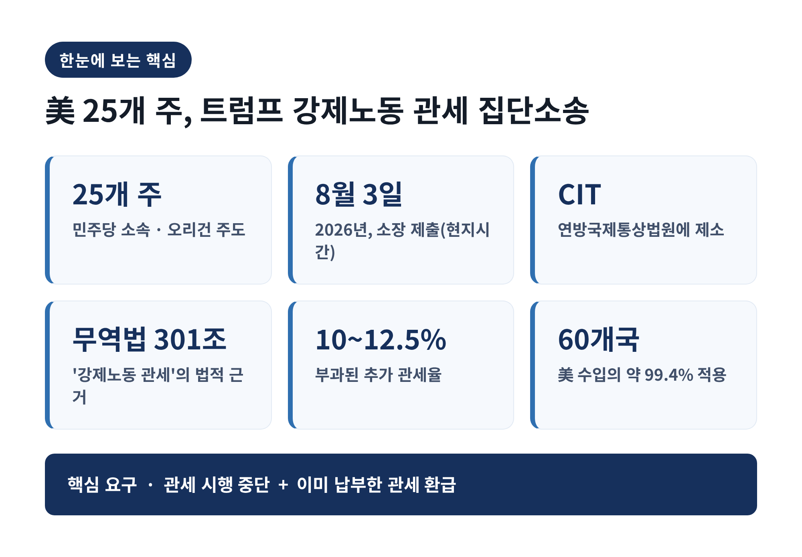
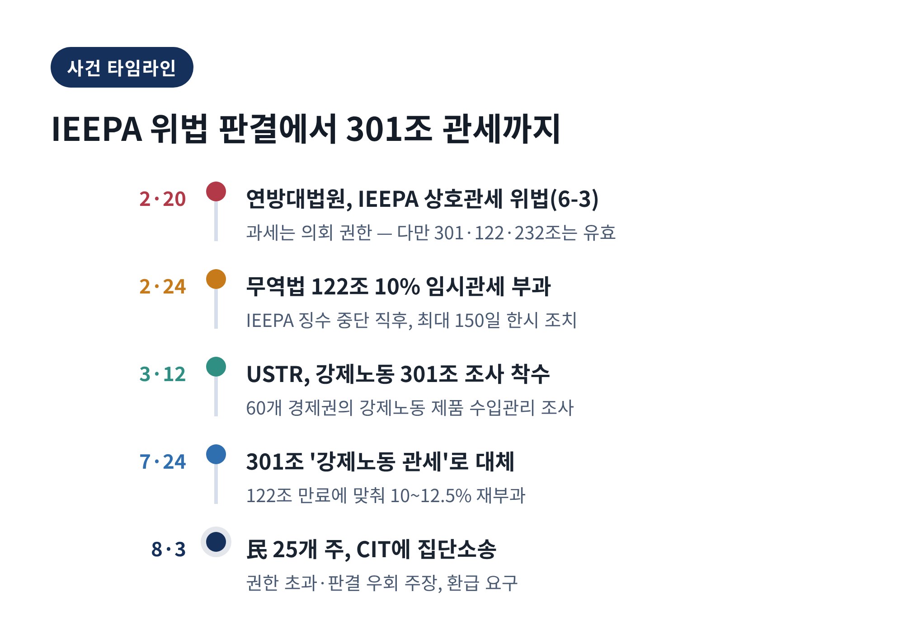
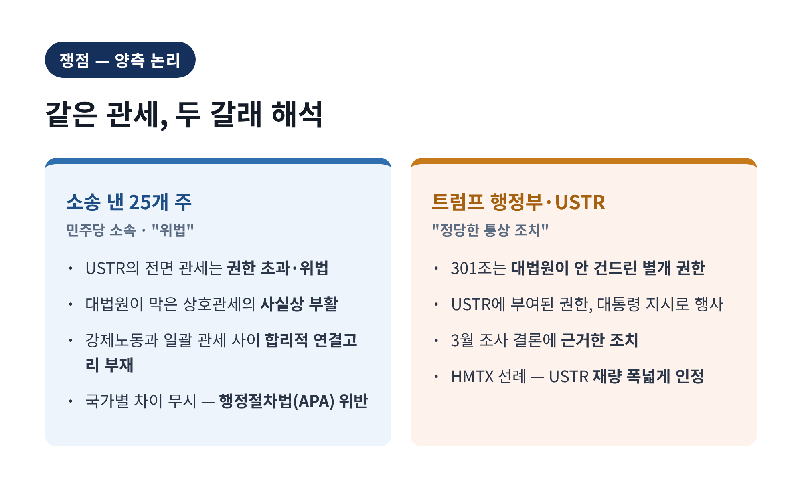
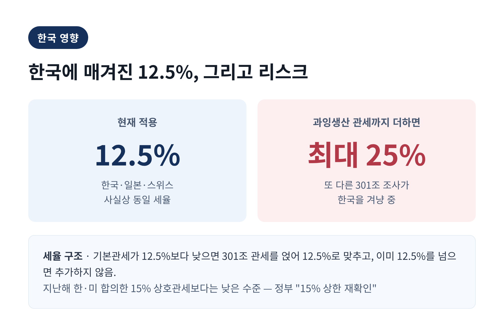
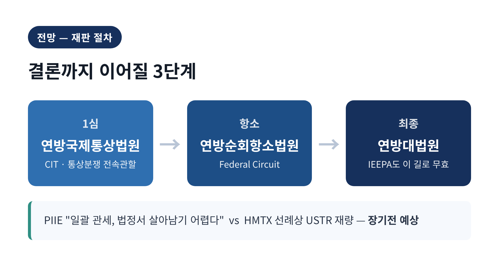
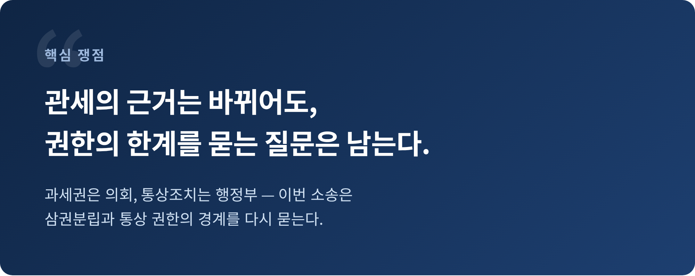

2026년 8월 3일, 미국의 민주당 소속 25개 주가 소장을 냈습니다.
상대는 트럼프 행정부입니다.
쟁점은 무역법 301조에 근거한 이른바 '강제노동 관세'입니다.
이 주들은 관세가 위법하다고 주장합니다.
소송은 통상 분쟁을 전담하는 연방국제통상법원(CIT)에 접수됐습니다.
소송을 이끈 곳은 오리건주이고, 애리조나와 캘리포니아가 함께 앞장섰습니다.
요구는 두 가지입니다.
하나는 관세 시행을 멈춰 달라는 것.
다른 하나는 이미 낸 관세를 돌려 달라는 것입니다.
문제가 된 관세는 미국무역대표부(USTR)가 60개 무역 상대국에 매긴 10~12.5%의 추가 관세입니다.
이 60개국은 미국 전체 수입의 약 99.4%를 차지합니다.
사실상 거의 모든 교역 상대가 대상인 셈입니다.
이 소송을 이해하려면 반년 전으로 돌아가야 합니다.
2026년 2월 20일, 미 연방대법원은 6대 3으로 판결했습니다.
트럼프 대통령이 국제비상경제권한법(IEEPA)을 근거로 매긴 '상호관세'가 위법이라는 결론이었습니다.
과세는 헌법상 의회의 권한이며, IEEPA에 관세를 부과할 권한까지 담겨 있지는 않다고 본 것입니다.
다만 대법원은 선을 그었습니다.
이 판결은 IEEPA 관세에만 적용되며, 무역법 232조·122조·301조 같은 다른 근거의 관세는 건드리지 않는다고 명시했습니다.
행정부의 대응은 빨랐습니다.
2월 24일 IEEPA 관세 징수가 멈추자, 곧바로 무역법 122조를 꺼내 전 세계 수입품에 10% 임시 할증관세를 매겼습니다.
이 조치는 최대 150일짜리였습니다.
그사이 3월 12일, USTR은 강제노동 관행을 겨냥한 301조 조사에 착수했습니다.
그리고 122조 관세의 시한이 다가온 7월 24일, 행정부는 이를 301조 '강제노동 관세'로 갈아 끼웠습니다.
"60개국이 강제노동으로 만든 제품의 수입을 제대로 막지 않았다"는 조사 결론이 근거였습니다.
예전엔 IEEPA가 관세의 칼자루였습니다.
지금은 그 자리를 301조가 대신하고 있습니다.

이 다툼의 밑바닥에는 삼권분립이 있습니다.
관세는 결국 세금입니다.
세금을 매기는 권한은 헌법이 의회에 맡겨 두었습니다.
그런데 행정부가 통상 관련 법률을 근거로 폭넓은 관세를 매기고 있습니다.
한 근거가 막히면 다른 근거로 옮겨 탄다.
이것이 정당한 법 집행인지, 아니면 판결을 피해 가는 우회인지가 이번 소송의 핵심입니다.
대상 범위도 가볍지 않습니다.
미국 수입의 99.4%가 걸려 있으니, 판결 하나가 세계 통상질서 전체를 흔들 수 있습니다.
그래서 이 소송은 미국 내부의 정치 다툼을 넘어, 교역국 모두가 지켜보는 사안이 되었습니다.
먼저 소송을 낸 25개 주의 주장입니다.
이들은 USTR이 301조로 사실상 전면 관세를 매긴 것은 의회가 준 권한을 넘어선 위법이라고 봅니다.
대법원이 무효로 만든 상호관세를, 근거만 바꿔 되살리려는 시도라는 것입니다.
"국제 공급망의 강제노동 문제와, 전 세계에 매긴 일괄 관세 사이에는 합리적 연결고리가 없다"는 표현도 소장에 담겼습니다.
301조는 특정국의 불공정 관행을 조사한 뒤, 그 행위를 끝내도록 맞춰 대응하라는 조항인데, 60개국에 획일적 세율을 매긴 것은 그 취지와 어긋나고 행정절차법에도 반한다는 논리입니다.
반대편, 트럼프 행정부와 USTR의 논리도 짚어야 균형이 맞습니다.
행정부는 대법원이 무효로 한 것은 IEEPA 관세뿐이며 301조는 멀쩡히 살아 있는 권한이라고 봅니다.
301조는 대통령이 아니라 USTR에 관세 권한을 주되, 대통령의 지시에 따라 행사하도록 설계된 조항입니다.
USTR은 3월부터 진행한 조사에서 "60개 경제권이 강제노동 제품 수입 금지를 제대로 이행하지 않았다"고 결론지었고, 그 결과로 관세를 매겼다는 입장입니다.
연방순회항소법원이 과거 HMTX 사건에서 USTR의 관세 조정 재량을 넓게 인정한 선례도 행정부에 유리한 근거로 거론됩니다.
한쪽은 "권한 남용"이라 하고, 다른 쪽은 "정당한 통상 조치"라 합니다.
판단은 결국 법원의 몫입니다.

한국도 이 관세의 대상입니다.
한국은 일본·스위스와 함께 사실상 12.5%의 관세율이 적용됩니다.
구조는 이렇습니다.
어떤 품목의 기본관세가 12.5%보다 낮으면 301조 추가관세를 얹어 12.5%를 맞춥니다.
반대로 기본관세가 이미 12.5%를 넘으면 추가관세는 붙지 않습니다.
그나마 다행인 점은 있습니다.
이 12.5%는 지난해 한·미가 합의한 15% 상호관세보다는 낮은 수준입니다.
정부도 "미국 측이 기존 15% 상한을 재확인했다"고 설명했습니다.
그러나 안심하기는 이릅니다.
미국은 '과잉생산'을 겨냥한 또 다른 301조 조사로도 한국을 들여다보고 있습니다.
여기에 관세가 더해지면 한국의 부담은 최대 25%까지 커질 수 있습니다.

전문가들의 시선은 엇갈리지만, 행정부에 마냥 유리하지는 않습니다.
피터슨국제경제연구소(PIIE)는 "이 강제노동 관세가 법정 다툼에서 살아남기 어려울 것"이라고 내다봤습니다.
획일적 일괄 관세가 301조의 '조사·맞춤' 요건과 행정절차법 심사를 통과하기 쉽지 않다는 취지입니다.
다만 결과를 단정하기는 이릅니다.
앞서 본 HMTX 선례처럼 USTR의 재량을 넓게 인정한 판례도 있기 때문입니다.
절차는 길게 이어질 전망입니다.
CIT가 1심을 맡고, 결과는 연방순회항소법원 항소로 넘어가며, 끝내 대법원까지 갈 수 있습니다.
IEEPA 관세가 바로 그 길을 밟아 대법원에서 무효가 됐다는 점을 떠올리면, 이번에도 장기전이 예상됩니다.

정리하면 이렇습니다.
이번 소송은 관세 몇 퍼센트의 문제가 아니라, 관세를 매길 권한이 어디까지인가를 묻는 다툼입니다.
강제노동을 막겠다는 명분과, 절차와 권한을 지키라는 원칙이 법정에서 맞섭니다.
어느 쪽 손을 들어주든, 그 결과는 60개 교역국과 한국 기업의 셈법을 다시 흔들 것입니다.
"관세의 근거는 바뀌어도, 권한의 한계를 묻는 질문은 남는다."
판결이 나오기까지는 시간이 걸릴 것입니다.
그때까지 우리가 할 수 있는 일은, 감정이 아니라 사실로 이 사안을 지켜보는 것이라고 생각합니다.
